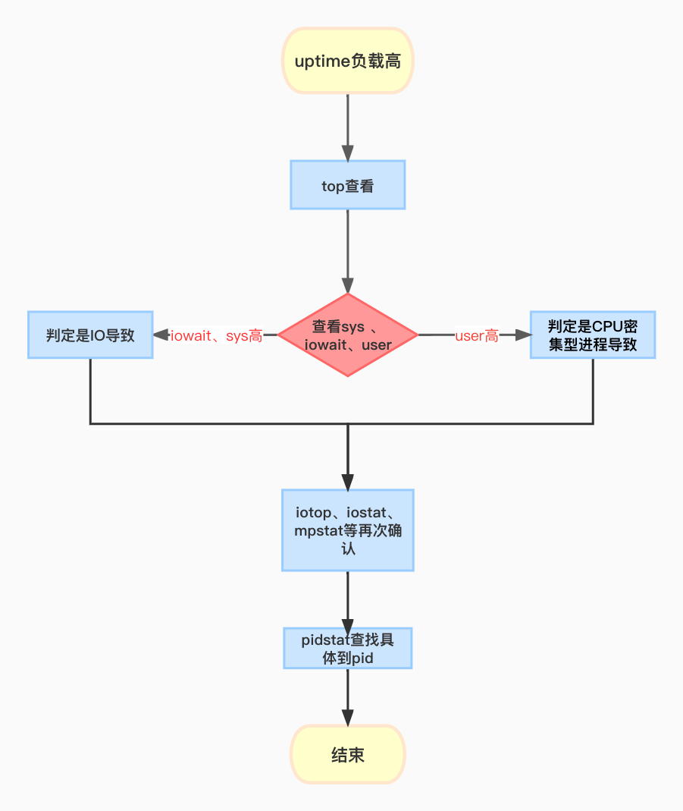

平均负载概述
系统负载反映机器的压力情况，是日常工作中需要重点关注的指标，利用uptime命令可以进行查看如下 ：
1 | [root@linx01 ~]# uptime |
从左到右含义依次是 当前时间、系统运行时间、正在登录用户数。过去 1 分钟、5 分钟、15 分钟的平均负载。
那平均负载的含义该如何理解呢？
平均负载是指单位时间内，系统处于可运行状态(R,S)和不可中断状态(D)的平均进程数，也就是平均活跃进程数
可运行状态： 进程状态种的S R 占用与消耗cpu资源
不可中断状态: 进程状态是D ,占用IO(input/output 读写)
因此你可以简单理解为，平均负载其实就是单位时间内的活跃进程数。
详细的可以参考这篇文章
阀值分析
通过概述，我们大概知道，负载反应的值与正在活跃的进程数有关，那最理想的状态是每个 CPU核心 上都刚好运行着一个进程，这样每个 CPU 都得到了充分利用。所以在评判平均负载时，首先你要知道系统有几个 CPU 核心，这可以通过 top 命令获取，或grep ‘model name’ /proc/cpuinfo
假设现在在 4、2、1核的CPU上，如果平均负载为 2 时，意味着什么呢？
在4 个 核心的系统上，意味着 CPU 有 50% 的空闲。 2/4 50% 系统的cpu核心总数利用50%
在2 个 核心 的系统上，意味着所有的 CPU 都刚好被完全占用。2/2 100% 每个核心都有任务,刚刚好.
而1 个核心 的系统上，则意味着有一半的进程竞争不到 核心。 2/1 200% 每个核心都有2个任务,超载.
假设我们在有2个 核心 系统上看到平均负载为 2.73，6.90，12.98
那么说明在过去1 分钟内，系统有 136% 的超载 (2.73/2=136%)
而在过去 5 分钟内，有 345% 的超载 (6.90/2=345%)
- 而在过去15 分钟内，有 649% 的超载，(12.98/2=649%)
但从整体趋势来看，系统的负载是在逐步的降低。
在工作中，当平均负载高于 cpu核心总数量 70% 的时候，你就应该分析排查负载高的问题了。一旦负载过高，就可能导致进程响应变慢，进而影响服务的正常功 能。 但 70% 这个数字并不是绝对的，最推荐的方法，还是把系统的平均负载监控起来，然后根据更多的历史数据，判断负载的变化趋势。当发现负载有明 显升高趋势时，比如说负载翻倍了，你再去做分析和调查。
案例分析
下面，我们以三个示例分别来看这三种情况，并用 stress、mpstat、pidstat 等工具，找出平均负载升高的根源
- stress 是 Linux 系统压力测试工具，这里我们用作异常进程模拟平均负载升高的场景。
- mpstat 是多核 CPU 性能分析工具，用来实时查看每个 CPU 的性能指标，以及所有 CPU 的平均指标
- pidstat 是一个常用的进程性能分析工具，用来实时查看进程的 CPU、内存、I/O 以及上下文切换等性能指标。
CPU密集型进程
开第一个终端模拟进程
1
2[root@linx01 ~]# stress --cpu 1 --timeout 600
stress: info: [20186] dispatching hogs: 1 cpu, 0 io, 0 vm, 0 hdd开第二个终端观察负载变化
1
2
3
4[root@linx01 ~]# watch -d uptime
Every 2.0s: uptime Wed Dec 14 22:14:10 2022
22:14:10 up 5:20, 4 users, load average: 0.79, 0.27, 0.13开第三个终端 查看cpu情况
1
2
3
4
5
6[root@linx01 ~]# mpstat -P ALL 5
Linux 3.10.0-1160.el7.x86_64 (linx01) 2022年12月14日 _x86_64_ (1 CPU)
22时15分02秒 CPU %usr %nice %sys %iowait %irq %soft %steal %guest %gnice %idle
22时15分07秒 all 99.60 0.00 0.40 0.00 0.00 0.00 0.00 0.00 0.00 0.00
22时15分07秒 0 99.60 0.00 0.40 0.00 0.00 0.00 0.00 0.00 0.00 0.00使用pidstat进行排查
1
2
3
4
5
6
7
8
9
10[root@linx01 ~]# pidstat -u 5 1
Linux 3.10.0-1160.el7.x86_64 (linx01) 2022年12月14日 _x86_64_ (1 CPU)
22时17分56秒 UID PID %usr %system %guest %CPU CPU Command
22时18分01秒 0 20187 98.80 0.00 0.00 98.80 0 stress
22时18分01秒 0 20366 0.00 0.20 0.00 0.20 0 kworker/0:0
平均时间: UID PID %usr %system %guest %CPU CPU Command
平均时间: 0 20187 98.80 0.00 0.00 98.80 - stress
平均时间: 0 20366 0.00 0.20 0.00 0.20 - kworker/0:0
IO密集型进程
使用stress 模拟IO操作
1
2[root@linx01 ~]# stress --io 1 --timeout 600s
stress: info: [20740] dispatching hogs: 0 cpu, 1 io, 0 vm, 0 hdd第二个终端观察负载
1
2
3
4[root@linx01 ~]# watch -d uptime
Every 2.0s: uptime Wed Dec 14 22:23:11 2022
22:23:11 up 5:29, 6 users, load average: 1.39, 1.08, 0.60查看cpu 情况
1
2
3
4
5
6[root@linx01 ~]# mpstat -P ALL 5
Linux 3.10.0-1160.el7.x86_64 (linx01) 2022年12月14日 _x86_64_ (1 CPU)
22时23分37秒 CPU %usr %nice %sys %iowait %irq %soft %steal %guest %gnice %idle
22时23分42秒 all 2.20 0.00 97.80 0.00 0.00 0.00 0.00 0.00 0.00 0.00
22时23分42秒 0 2.20 0.00 97.80 0.00 0.00 0.00 0.00 0.00 0.00 0.00发现cpu sys内核台占用cpu高，而io操作就是内核来操作的。
利用pidstat 排查导致sys高的进程
1
2
3
4
5
6
7
8
9
10
11
12[root@linx01 ~]# pidstat -u 5 1
Linux 3.10.0-1160.el7.x86_64 (linx01) 2022年12月14日 _x86_64_ (1 CPU)
22时25分02秒 UID PID %usr %system %guest %CPU CPU Command
22时25分07秒 0 5 0.00 9.00 0.00 9.00 0 kworker/u256:0
22时25分07秒 0 1276 0.00 0.20 0.00 0.20 0 sshd
22时25分07秒 0 16304 0.00 5.80 0.00 5.80 0 loop0
22时25分07秒 0 19077 0.00 9.20 0.00 9.20 0 kworker/u256:2
22时25分07秒 0 19950 0.00 0.20 0.00 0.20 0 kworker/0:2
22时25分07秒 0 20741 2.00 73.40 0.00 75.40 0 stress
22时25分07秒 0 20855 0.00 0.20 0.00 0.20 0 kworker/0:0
22时25分07秒 0 20963 0.00 0.20 0.00 0.20 0 pidstat明显看到stress进程%system 占用较高
高并发场景
stress 开多线程模拟
1
2[root@linx01 ~]# stress -c 4 --timeout 600
stress: info: [21233] dispatching hogs: 4 cpu, 0 io, 0 vm, 0 hdd查看负载
1
2
3
4[root@linx01 ~]# watch -d uptime
Every 2.0s: uptime Wed Dec 14 22:30:13 2022
22:30:13 up 5:36, 6 users, load average: 3.30, 1.78, 1.04由于我是虚拟机 只有1core，应付并发 负载已经很高了
查看一下进程情况
1
2
3
4
5
6
7
8
9
10
11[root@linx01 ~]# pidstat -u 5 1
Linux 3.10.0-1160.el7.x86_64 (linx01) 2022年12月14日 _x86_64_ (1 CPU)
22时32分55秒 UID PID %usr %system %guest %CPU CPU Command
22时33分00秒 0 1 0.00 0.20 0.00 0.20 0 systemd
22时33分00秒 0 21154 0.00 0.20 0.00 0.20 0 kworker/0:1
22时33分00秒 0 21234 24.65 0.20 0.00 24.85 0 stress
22时33分00秒 0 21235 25.05 0.00 0.00 25.05 0 stress
22时33分00秒 0 21236 24.85 0.00 0.00 24.85 0 stress
22时33分00秒 0 21237 25.05 0.00 0.00 25.05 0 stress
22时33分00秒 0 21452 0.00 0.20 0.00 0.20 0 pidstat很明显，4个stress进程分了cpu
排查流程总结
前面我们对不同的进程进行了演示，可以看到造成负载高的原因可能是IO或者CPU占用高，接下来我们总结一下排查流程以及要熟记的命令


...
...
This is copyright.